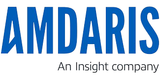
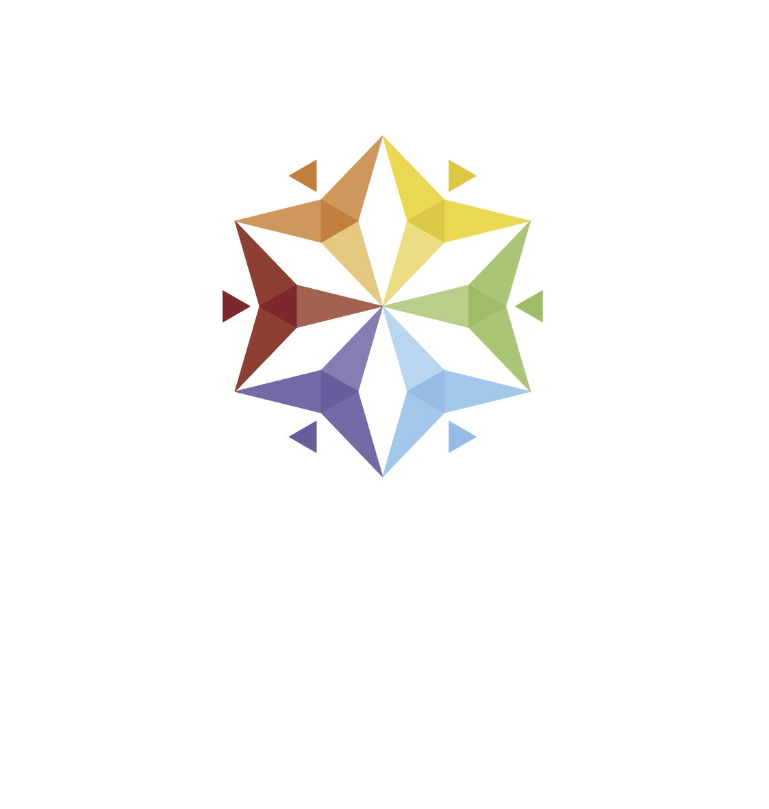
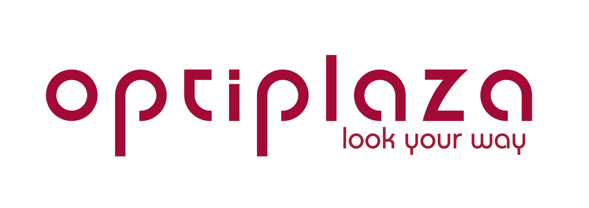
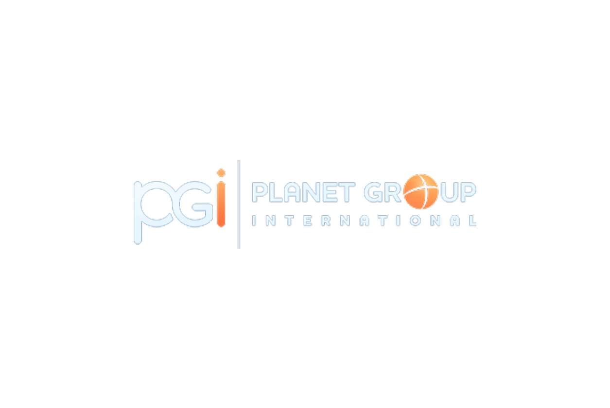
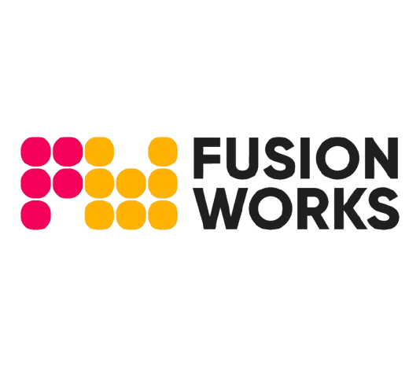

Brand Visibility
Your logo on all event materials, social media shoutouts, and on‑stage mentions during our hackathons and conferences.

Partner with FAF
Join the companies shaping Moldova's next generation of IT professionals. Choose a sponsorship tier that fits your goals and let's build something "cu tolk'".
Our events reach hundreds of students, developers, and tech professionals across Moldova every year. Here's what your brand gets in return.
Your logo on all event materials, social media shoutouts, and on‑stage mentions during our hackathons and conferences.
Direct access to top CS students. Recruit from hackathon winners and workshop participants before anyone else.
Support education, mentorship, and gender‑inclusive programs like SheNovate that create lasting change in Moldova's tech ecosystem.
Four tiers designed to match different levels of involvement. Every partnership helps us create better events for the community.
Show your support for Moldova's student tech community with baseline brand presence.
A well‑rounded package with visibility across our core events and channels.
Maximum exposure with priority placement and direct access to top student talent.
The ultimate collaboration — co‑create events, shape content, and embed your brand into the FAF experience.
Past and present partners who helped make our events possible.









